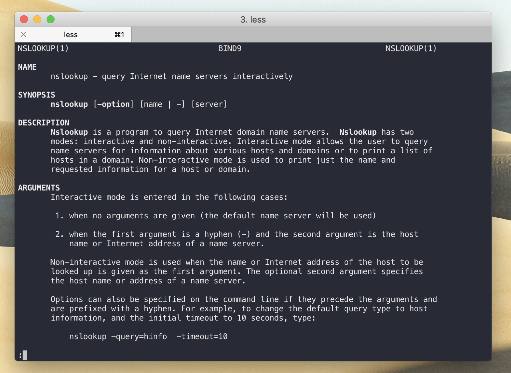

Intro to Bash¶
Bash command, terminal command, command line command, for the purpose of our class these all mean the same things. You should already be familiar with bash from INFO 201 and INFO 340. This following section will help you refresh some of the basics.
Huh, Bash?
If you feel completely lost and have never seen terminal commands we recommend watching these two videos:
Command documentation
If you don't know what a command does or how to use it simply use the man command!
man <commandName> will print out an documentation. Once you're done reading hit q on your keyboard to quit out. In the following screenshots I enter man nslookup which provides me with more information on what nslookup does and how it's used.

Directories
cdto change directorieslsto show files and directories at your current pathls -ato also show hidden files
Editing files
If you are editing a file on a remote server such as your Pi, you will not have the luxury of using a nice editor such as VS Code, Atom, or Sublime. Nevertheless, there are many powerful terminal editors.
Use nano or vim to edit files through your terminal.
How to edit a file that's on a linux server/your Pi:
- Use
nano <fileName>orvim <filename> - Nano is beginner friendly. If you are unfamiliar with these I recommend looking up a nano tutorial.
Logs
Check the last 100 lines of a service's logs. This is a great way to see if it ran into any errors.
sudo journcalctl -u <service name>- If you specficially only want to see the most recent parts of the log you can pipe the information it gives you into the tail command, which only shows any files' ending lines.
sudo journalctl -u <service name here>.service | tail -n 100
Services
Control services by using the systemctl command.
* Restart services: sudo systemctl restart <service name>
* See whether a service is running or not:sudo systemctl status <service name>
Copy files / scp
You can copy files from your laptop to a server or a server to your laptop by using scp.
It uses our ssh tunnel to securely transfer your files back and forth. You can find great examples at hyperx.org.
Copy all of the contents of a folder:
scp -r ava/* root@157.230.163.231:/var/www/html/
This copies everything in the ava folder to the html folder.
Local vs Remote
A typical confusion for students when deadling with scp is whether their current terminal session is doing work on their local machine (your laptop), or on a remote machine (your Raspberry Pi or another server).
You can tell which device your terminal session is doing work in by checking the hostname, that is whatever is after the @ symbol. Take a look at the two example tabs below.
1 2 3 | # hostname = macbook-pro # This tells me I'm on my laptop. ben@macbook-pro:~/Desktop/info-314/ |
1 2 3 | # hostname = debian-lab1 # I must be on my server now. ben@debian-lab1:~$ |